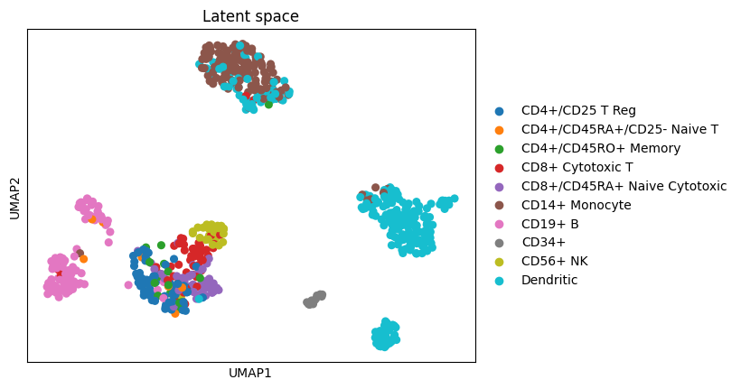

{kind=link}
from parag.hypergraph import to_net
cfg,df_=to_net(
nodes=nodes.sort_values('Essentiality (determined from multiple datasets)'),
edges=edges,
col_node_id='Gene ID',
col_source='# protein1',
col_target='protein2',
col_subset_id='Essentiality (determined from multiple datasets)',
show_node_names=True,
defaults=dict(
radius=250,
innerRadius=280,
outerRadius=295,
textSize=7,
textOffset=3,
),
)parag
Para (beyond pairwise) Graph: interactive visualization of higher-order graphs in Python
Install
pip install paragInterpretation as a hypergraph, using proportion of degrees by communities
Proportion of degrees by communities in a pairwise graph helps reveal how nodes are grouped together and connected within different communities. This analysis highlights clusters of nodes with strong internal connections, potentially representing higher-order relationships. By comparing the degree proportions within and between communities, we can distinguish internal cohesion from inter-community interactions. These insights aid in interpreting the graph as a hypergraph, where communities with high intra-community connections may signify higher-order relationships, offering a richer understanding of complex interactions beyond simple pairwise connections.
Inspired by
Vehlow, Corinna, Thomas Reinhardt, and Daniel Weiskopf. “Visualizing fuzzy overlapping communities in networks.” IEEE Transactions on Visualization and Computer Graphics 19.12 (2013): 2486-2495.
Figure 9B
Examples:
Gene interaction networks
Neighbourhood analysis in latent space e.g. single cell data
sc.pl.umap(adata, color="bulk_labels",title='Latent space')
from parag.core import get_net_data
nodes,edges=get_net_data(adata) ## generated network data by measuring distances in the latent space and thresholdingfrom parag.hypergraph import to_net
cfg,df_=to_net(
nodes,
edges,
col_node_id='cell id',
col_source='cell id1',
col_target='cell id2',
col_subset_id='bulk_labels',
show_node_names=False,
defaults=dict(
textSize=8,
textOffset=3,
),
)Heterogeneous graph e.g. drug side-effects network
## filter
nodes=(df02
.loc[:,["Individual Side Effect","Side Effect Name"]]
.log.drop_duplicates()
.assign(
#Side Effect type
subset=lambda df: df['Side Effect Name'].str.split(' ',expand=True)[0],
)
.drop(['Side Effect Name'],axis=1)
.groupby('subset').filter(lambda df: len(df)>3 and len(df)<10)
.head(5)
.sort_values('subset')
.log('Individual Side Effect') # id
.log('Individual Side Effect') # name
)
nodes.head(1)| Individual Side Effect | subset | |
|---|---|---|
| 1 | C0162830 | Photosensitivity |
edges=(
df02
.log.query(expr=f"`Individual Side Effect` == {nodes['Individual Side Effect'].unique().tolist()}")
)
edges.head(1)| # STITCH | Individual Side Effect | Side Effect Name | |
|---|---|---|---|
| 1 | CID003062316 | C0162830 | Photosensitivity reaction |
## append drugs to nodes
nodes=pd.concat(
[
edges.loc[:,['# STITCH']].drop_duplicates().rename(columns={'# STITCH':'node id'},errors='raise').assign(subset='drug'),
nodes.rename(columns={'Individual Side Effect':'node id'},errors='raise'),
],
axis=0,
)
nodes.head(1)| node id | subset | |
|---|---|---|
| 1 | CID003062316 | drug |
from parag.hypergraph import to_net
cfg,df_=to_net(
nodes,
edges,
col_node_id='node id',
col_source='# STITCH',
col_target='Individual Side Effect',
col_subset_id='subset',
show_node_names=False,
defaults=dict(
radius=200,
innerRadius=205,
outerRadius=235,
textSize=9,
textOffset=3,
cornerRadius=3.5,
),
)Network communities
# Plot graph with colouring based on communities
fig, ax = plt.subplots(1,1, figsize=(5, 3))
visualize_communities(G, communities[3], 2)nodes=pd.Series({i:list(t) for i,t in enumerate(communities[3])}).explode().to_frame('node id').reset_index().rename(columns={'index':'community id'}).sort_values('community id')
nodes.head(1)| community id | node id | |
|---|---|---|
| 0 | 0 | 0 |
edges=pd.DataFrame(G.edges,columns=['source','target'])
edges.head(1)| source | target | |
|---|---|---|
| 0 | 0 | 1 |
from parag.hypergraph import to_net
cfg,df_=to_net(
nodes.applymap(str),
edges.applymap(str),
col_node_id='node id',
col_source='source',
col_target='target',
col_subset_id='community id',
show_node_names=True,
defaults=dict(
radius=180,
innerRadius=205,
outerRadius=235,
textSize=17,
textOffset=4,
cornerRadius=3.5,
),
)How to cite?
- Using BibTeX:
@software{Dandage_parag,
title = {parag: interactive visualization of higher-order graphs in Python},
author = {Dandage, Rohan},
year = {2024},
url = {https://doi.org/10.5281/zenodo.10703097},
version = {v0.0.1},
note = {The URL is a DOI link to the permanent archive of the software.},
}DOI link:
 , or
, orUsing citation information from CITATION.CFF file.